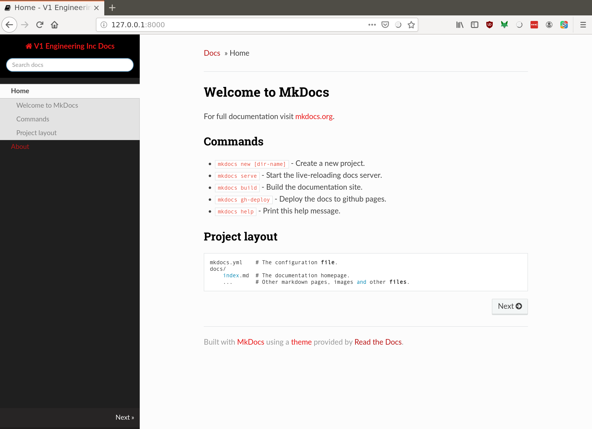

mkdocs Information¶
For full documentation visit mkdocs.org.
A good markdown cheat sheet is available here. The complete syntax is available here
Creating Links¶
Here’s a link to the forums:
Here’s a link to another page in the documentation:
Here’s a link to a specific section in the documentation:
Images¶
Note
It’s preferable to use the syntax in Image Resizing to this basic syntax for the v1 instructions.
If the image is on v1engineering.com, and it’s the right size, then it can be placed here with markdown like this:


If the image is something you want to share, and it’s the right size, then it can be added to the docs/img folder and linked like this:


Image Resizing¶
In these instructions, it’s helpful to allow a really big image to see detail. But also only show a smaller version, to show the overview. To accomplish this, we want the images to be big in their original format, and then smaller in the documentation. Then, when the user clicks the image, they should get a bigger view.
Using these features is done like this:
{: loading=lazy width="400" }
Notice the extra ! in the [] brackets. That makes this a link to the image. Notice also the
{: loading=lazy width="400" }. That adds attributes to the image, and width limits the size, without changing
the aspect ratio. You can also add height="" and set the height.
{kind=link}
Organization¶
Documentation can be found at mkdocs.org
mkdocs 0.16.0 was too old for the nav tag. The 1.0 version works though.
The organization is in the nav section of mkdocs.yml,
and nesting more than two is funky. Also, top levels can’t be pages, so it’s really more like just two deep.
-
style/css/theme.
-
DONE. CC-BY-SA info in the pages.
Bonus stuff¶
Embed videos¶
Grab this snippet and change the video id in the YouTube URL. You can get this snippet (or some newer version) by clicking the share button and choosing “embed” on any YouTube video.
<iframe width="560" height="315" src="https://www.youtube.com/embed/iHAhtaadcCg"
title="YouTube video player" frameborder="0" allow="accelerometer; autoplay;
clipboard-write; encrypted-media; gyroscope; picture-in-picture" allowfullscreen></iframe>
Emojis?¶

https://facelessuser.github.io/pymdown-extensions/extensions/smartsymbols/
Symbols too, like ™, ©, →, ±, ¼, ⅛
Equations?¶
https://facelessuser.github.io/pymdown-extensions/extensions/arithmatex/
p(x|y) = \frac{p(y|x)p(x)}{p(y)}, p(x|y) = \frac{p(y|x)p(x)}{p(y)}.$$
Details¶
https://facelessuser.github.io/pymdown-extensions/extensions/details/
More
Here are some more details
Task Lists¶
https://facelessuser.github.io/pymdown-extensions/extensions/tasklist/
Task Lists are static. They don’t let users click through them.
- item 1
- item A
- item B
more text
- item a
- item b
- item c
- item C
- item 2
- item 3
Tables¶
This helps a lot: Table Generator
| Tables | Are | Cool |
|-------------|:-------------:|------:|
| col 1 is | left-aligned | $1600 |
| col 2 is | centered | $12 |
| column 3 is | right-aligned | $1 |
| Tables | Are | Cool |
|---|---|---|
| col 1 is | left-aligned | $1600 |
| col 2 is | centered | $12 |
| column 3 is | right-aligned | $1 |
Definitions¶
- Doe
- A deer, a female deer
- Ray
- A drop of golden sun
- Me
- A name I call myself
- Far
- A long long way to run
- Sew
- A needle pulling thread
- La
- A note to follow Sew
- Tea
- A drink with jam and bread
Favicon¶
TODO: https://www.mkdocs.org/#changing-the-favicon-icon
Code Highlighting¶
https://python-markdown.github.io/extensions/code_hilite/
import tensorflow as tf
https://facelessuser.github.io/pymdown-extensions/extensions/inlinehilite/
inlinehilite allows inline code syntax highlighting like this: import tensorflow as tf.
Local mkdocs¶
Running mkdocs locally is great if you’re making a lot of edits, or you’re trying to refine the style of the deployed website.
It basically works like this:
- The source files are written in markdown, with a few extra pieces of syntax going to specialized markdown parts.
- mkdocs uses the mkdocs.yml file to configure itself for this project.
- mkdocs configures and runs our markdown files through python-markdown.
- If you’re running
mkdocs serve, then the html output is immediately served locally, and you can get to it at http://localhost:8000 . - As soon as you change a file, the mkdocs serve will reload the page in your browser, which immediately shows the change. Cool!.
- When things are all working great, mkdocs will build the documentaton and deploy it to the github.io site.
Commands¶
mkdocs new [dir-name]- Create a new project.mkdocs serve- Start the live-reloading docs server.mkdocs build- Build the documentation site.mkdocs gh-deploy- Deploy the docs to github pages.mkdocs help- Print this help message.
Installing dependencies¶
Since this no longer only requires mkdocs as a dependency, there is a requirements.txt.
To make sure you have the requirements, and you’re trying to build the docs on your computer, you can do this:
pip install -r requirements.txt
I recommend doing this in a virtualenv environment, which will let you easily remove the things you’ve installed if you’ve made a mistake.
Project layout¶
mkdocs.yml # The configuration file.
docs/
index.md # The documentation homepage.
... # Other markdown pages, images and other files.